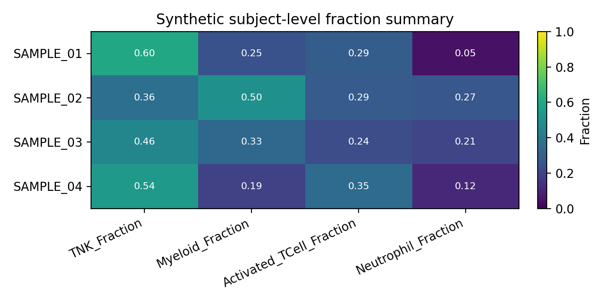

Ingest + Tabulate¶
--workflow ingest_tabulate
Downloads cell-level metadata (without full Seurat objects) from LabKey and aggregates it into a subject-level summary table. No GPU, no HPC required — the lightest workflow and the best starting point for cohort QC and metadata exploration.
Stage-by-stage dataflow¶
flowchart TD
SS["**samplesheet.csv**
sample_id · output_file_id · species"]
INGEST_META["**INGEST_METADATA**
(Rdiscvr)
Downloads cell metadata CSV only (no Seurat RDS)"]
COLLECT["collect()
Gathers all metadata CSVs"]
TABULATE["**TABULATE**
(Rdiscvr)
Cell-type proportions → subject-level summary table"]
OUT_META["outputs/ingest/{id}/{id}_metadata.csv
Cell-level metadata for each sample"]
OUT_TABLE["outputs/tabulate/subjectIdTable.csv
Subject × cell-type proportion table"]
SS --> INGEST_META
INGEST_META -->|"tuple(meta, metadata.csv)"| OUT_META
INGEST_META -->|"all metadata CSVs"| COLLECT
COLLECT -->|"[metadata.csv, ...]"| TABULATE
TABULATE --> OUT_TABLEInputs¶
Samplesheet¶
Path: --input (default data/samplesheet.csv)
See Data Formats → Samplesheet.
Required parameters¶
| Parameter | Description |
|---|---|
--labkey_base_url |
LabKey server base URL |
--labkey_folder |
LabKey folder path |
Optional parameters¶
| Parameter | Default | Description |
|---|---|---|
--tabulate_id_cols |
cDNA_ID,SubjectId,Vaccine,Timepoint,Tissue |
Subject-level ID columns to carry into the summary table |
--tabulate_celltype_cols |
(empty) | Additional cell-type columns beyond the standard RIRA set |
--tabulate_parent_col |
(empty) | Parent lineage gating column (defaults to RIRA_Immune.cellclass) |
--tabulate_celltype_parent_map |
(empty) | Override parent→child hierarchy (e.g. RIRA_TNK_v2.cellclass:TNK) |
--outdir |
outputs/ |
Output directory |
Outputs¶
INGEST_METADATA → outputs/ingest/{sample_id}/¶
| File | Description |
|---|---|
{sample_id}_metadata.csv |
Cell-level metadata table for the sample. Each row is one cell (barcode). Columns include barcode, sample_id, species, and all RIRA/custom annotation columns present in the Seurat object on LabKey. |
Column name normalization
The module automatically normalizes column name aliases:
cellbarcode → barcode, RIRA_Immune_v2.cellclass → RIRA_Immune.cellclass.
TABULATE → outputs/tabulate/subjectIdTable.csv¶
Columns depend on --tabulate_id_cols and available RIRA cell-type columns. Structure:
| Column group | Description |
|---|---|
--tabulate_id_cols |
Subject identity columns carried from metadata (e.g. cDNA_ID, SubjectId, Vaccine, Timepoint, Tissue) |
{celltype_col}__{value} |
One column per cell-type category, containing the proportion (0–1) of cells in that category per subject |
The standard RIRA columns automatically included when present:
RIRA_Immune.cellclass(broad lineage: T cell, B cell, Myeloid, …)RIRA_TNK_v2.cellclass(T/NK subtypes, conditioned on immune parent)RIRA_Myeloid_v3.cellclass(myeloid subtypes)
Synthetic example subject table¶
The docs and smoke tests use seeded metadata to generate a safe subjectTable_TB.csv example. The heatmap below shows the type of wide-format subject summary emitted by TABULATE.

Each row is one subject/sample identity record and each numeric column is a proportion derived from the cell-level metadata.
See the full Synthetic Tabulation Walkthrough and the generated API Reference → Workflows.
Running locally¶
nextflow run main.nf \
--workflow ingest_tabulate \
--labkey_base_url https://labkey.example.org \
--labkey_folder /My/Project/Folder
With custom identity and cell-type columns:
nextflow run main.nf \
--workflow ingest_tabulate \
--tabulate_id_cols "cDNA_ID,SubjectId,Vaccine,Timepoint,Tissue" \
--tabulate_celltype_cols "RIRA_TNK_v2.cellclass" \
--tabulate_parent_col "RIRA_Immune.cellclass" \
--labkey_base_url https://labkey.example.org \
--labkey_folder /My/Project/Folder
Running on HPC¶
sbatch slurm_nextflow.sh \
--workflow ingest_tabulate \
--labkey_base_url https://labkey.example.org \
--labkey_folder /My/Project/Folder
Resource profile¶
| Step | CPUs | Memory | Wall time |
|---|---|---|---|
| INGEST_METADATA | 4 | 32 GB | 4 h |
| TABULATE | 4 | 24 GB | 4 h |
Downstream use¶
The subjectIdTable.csv is designed for direct import into R or Python for cohort-level analysis:
See also example_tabulation_script.rmd in the repository root for a worked example.